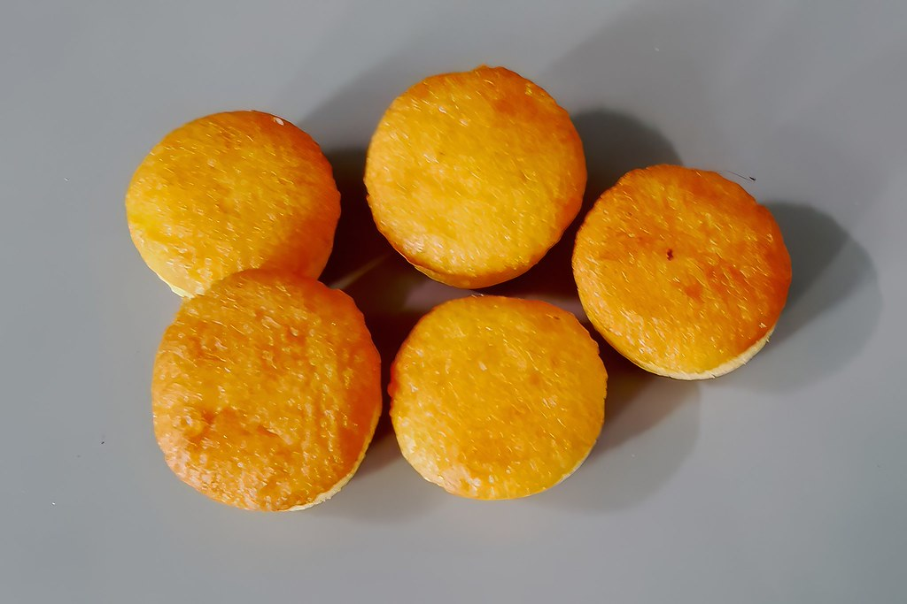

Weekend Only
週末のみ営業
週末だけ、飴色の函をひらく。
新潟県五泉市。小さな函に、素材と時間を凝縮して届ける、週末だけのパティスリーです。
Concept
小さな函に、凝縮した仕事
patisserie PRARIのお菓子は、けっして大きくはありません。けれど、その小さな函の中には、選び抜いた素材と、一つひとつに丁寧に向き合う時間が惜しみなく詰め込まれています。値段だけを見れば少し驚かれるかもしれませんが、実際に口にしていただければ、その理由にきっと納得していただけるはずです。
お店のことをもっと知る
Small Box
凝縮した仕事

PHOTO SAMPLE
Signature
断面に宿る、飴色の仕事
PRARIを代表するお菓子は、じっくりと焼き上げたパウンドケーキです。切り分けるたびに現れる飴色の断面には、素材の良さと手間がそのまま映し出されています。チョコブランニューやグランベリードリンクなど、詳しいラインナップは「お菓子とドリンクについて」のページでご紹介しています。
お菓子とドリンクについて見る訪れた方の声
Googleの口コミより、PRARIを訪れた方の声を一部ご紹介します。
週末しか営業していない、小さなケーキ屋さんです。単価は高めですが、パティシエさんの心構えというか、お客様への気持ちと、商品への気持ちが、とても伝わってくるお店です。
──(Google口コミより/★4)
Gift & Access
函を、手土産に。
小さいけれど中身の詰まったPRARIのお菓子は、五泉の手土産としても選ばれています。まとまった数をご希望の場合は、お電話またはInstagramにて事前にご相談ください。
〒959-1833 新潟県五泉市五十嵐新田987-1
0250-47-4699
土日を中心とした週末のみの営業です。詳しい営業日・営業時間は公式Instagramにてご確認ください。
アクセス詳細はこちら